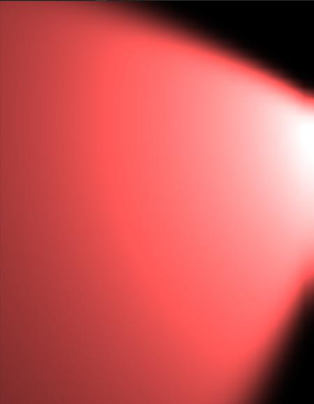
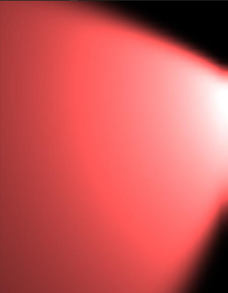
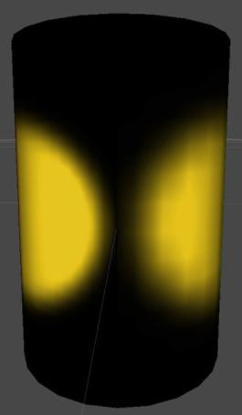
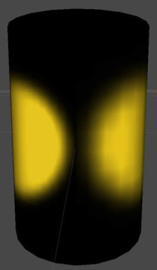

生成光照贴图 UV
您可以自行为网格生成光照贴图 UV，或者 Unity 可以自动生成它们。
生成您自己的光照贴图 UV
您可以在所选的内容创作软件中编写自己的光照贴图 UV。必须将光照贴图 UV 放置在网格的第二个 UV 通道中。
光照贴图的合理 UV 集应遵循以下规则：
- 应在 [0,1] x [0,1] UV 空间内。
- 在各个图表之间应有足够宽的边距。有关更多信息，请参阅 UV 重叠结果。
- 不得有任何重叠面。
- UV 中的角度与原始几何体中的角度之间差异不大。
- 除非您希望某些区域具有更高的光照贴图分辨率，否则 UV 中三角形的相对比例与原始几何体中三角形的相对比例之间应该存在较小差异。
自动为模型生成光照贴图 UV
可以使用 Model Import Settings 告诉 Unity 为模型自动生成光照贴图 UV。
1.在 Project 视图中选择模型。Unity 将在 Inspector 中打开 Model Import Settings。 2.在 Model Import Settings 中，导航到 Model 选项卡，然后导航到 Geometry 部分。 3.勾选 Generate Lightmap UVs 复选框。Lightmap UVs settings 部分显示在 Generate Lightmap UVs 复选框的下方。 4.可选：配置 Lightmap UVs settings 部分中的设置。请参阅设置以了解更多信息。 4.单击 Apply 按钮。Unity 会将光照贴图 UV 生成到 Mesh.uv2 通道中。
Lightmap UVs settings
启用 Generate Lightmap UVs 后，这些设置会显示在 Model Import Settings 的 Model 选项卡中。
| 属性： | 功能： |
|---|---|
| Hard Angle | 相邻三角形之间的角度（以度为单位），Unity 根据此角度将其视为硬边缘并创建接缝。您可以将角度设置为 0 到 180 之间的值。默认情况下设置为 88 度。 如果将此角度设置为 180 度，Unity 会认为所有边缘都是平滑的，这适用于生物模型。默认值（88 度）适用于机械模型。 |
| Pack Margin | 在假设网格占据整个 1024x1024 光照贴图的前提下，相邻图表之间的边距（以像素为单位）。您可以将此值设置为 1 到 64 之间的值。较大的值会增加边距，但也会增加图表所需的空间量。默认情况下，此值设置为 4。 有关更多信息，请参阅 Pack Margin。 |
| Angle Error | UV 角度与源几何体中角度的最大可能偏差（百分比形式，范围从 0 到 100）。默认情况下，此值设置为 8%。 此属性控制 UV 空间中三角形与原始几何体中三角形的差异程度。通常，为避免在应用光照贴图时出现瑕疵，此数值应该相当低。 |
| Area Error | UV 面积与源几何体中面积的最大可能偏差（百分比形式，范围从 0 到 100）。默认情况下，此值设置为 15%。 此属性控制 Unity 保留相对三角形面积的程度。增大此值可以创建更少的图表。但是，增大该值可能会改变三角形的分辨率，因此请确保产生的失真不会降低光照贴图的质量。 |
Pack Margin
为允许过滤，光照贴图包含图表边缘附近的纹理像素中的光照信息，因此应在图表之间始终包含一定的边距，以免在应用光照贴图时出现光渗。
光照贴图分辨率定义了光照贴图的纹理像素分辨率。光照贴图工具 (Lightmapper) 会扩大光照贴图中的一些图表纹理像素以避免黑色边缘，因此网格的 UV 图表必须至少相距两个完整的纹理像素，从而避免光渗。使用 Pack Margin 设置可确保几何体的 UV 图表之间有足够的边距。

在光照贴图 UV 空间中，图表之间的填充需要至少两个完整纹理像素，以免出现 UV 重叠和意外光渗。在此图中，黑色空白表示图表之间的空隙。
角度失真
以下截屏显示了相同的分辨率，但具有不同的 UV。第一张图的 Angle Error 较高，结果中包含意料之外的失真。第二张图使用 Angle Error 默认值 (8%)。在具有较多三角形的网格中，角度失真会让形状显著失真。
 

区域失真
在下图中，两个具有相同参数的聚光灯照亮圆柱体的两侧。圆柱体右侧的 Area Error 值较高，导致三角形失真并且分辨率降低，从而在光照中产生瑕疵。
 

在 2018.1 版中添加了渐进光照贴图 NewIn20181